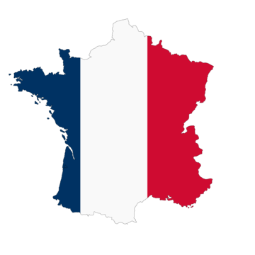
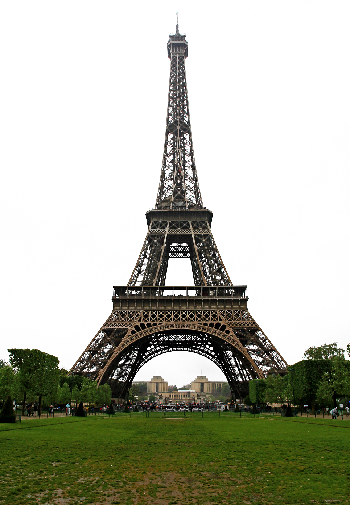

France
France, located in Western Europe, is known for its rich culture, cuisine, and landmarks like the Eiffel Tower. It has a deep history in art, fashion, and politics. The country has diverse landscapes ranging from the French Riviera to the Alps. France is also a founding member of the European Union and a global cultural powerhouse. The capital of france is Paris which is a major global tourist centre, home to the Eiffel Tower.

